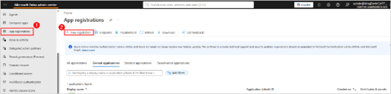
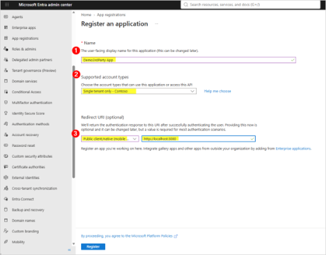
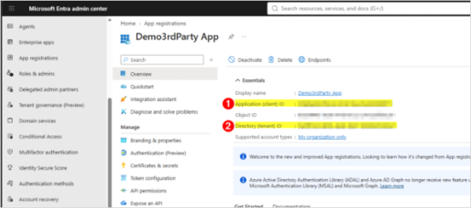
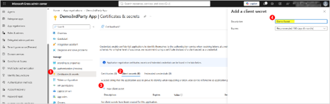
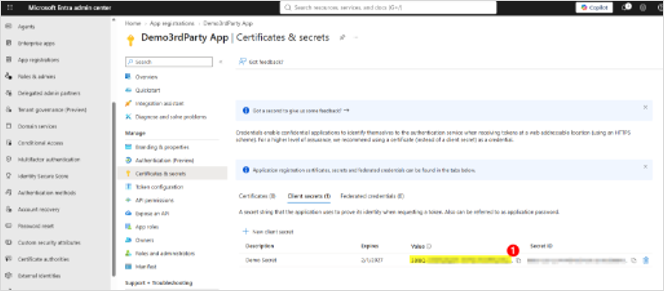
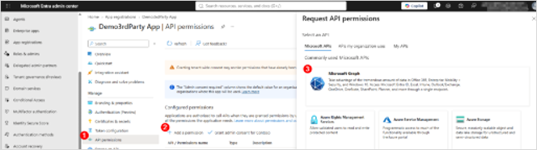
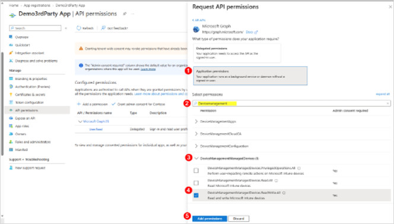
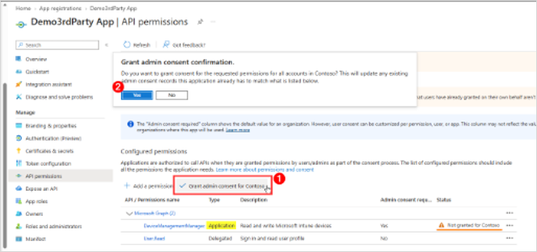

Step 1 · App registration
Register a new app
Open the Microsoft Entra admin center and go to App registrations. Click New registration.

Step 2 · Registration form
Complete the registration form
Enter a Name, choose the Supported account types, and set the Redirect URI. Use the same values shown here.

Step 3 · Identifiers
Copy the application identifiers
The overview page shows the Application (client) ID and the Directory (tenant) ID. Save both values — the simulator needs them later.

Step 4 · Credentials
Create a client secret
Open Certificates & secrets, select Client secrets, and click New client secret. Name it, choose an expiration period, then click Add.

Step 5 · Important
Protect the secret value
The Value column is shown in full only once. Copy it immediately and store it somewhere safe — it is hidden after you leave the page.

Step 6 · Microsoft Graph
Add Microsoft Graph permissions
Open the API permissions tab, click Add a permission, and choose Microsoft Graph.

Step 7 · Application access
Select the permissions you need
Choose Application permissions, then search for the DeviceManagementManagedDevices set. Check the ReadWrite.All permission — a POST request needs write access — then click Add permissions.

Step 8 · Admin consent
Grant the permissions
Select Grant admin consent for your tenant and confirm the prompt. Keep the permission type set to Application for the client-credential flow, then check that Status shows Granted.
